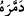
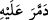
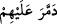
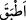
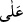
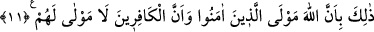

öncekilerin;” Şam Yemen ve Irak tarafına gidip Âd, Semûd ve Sebe’ halkı gibi
peygamberlerini yalanlayan ümmetlerin “sonunun nasıl olduğunu görsünler?” Zira
onların ülkelerindeki geride bıraktıkları kalıntılar, onlardan haber vermektedir. “Allah
onları(n evlerini, barklarını) yıkıp başlarına geçirmiştir.” Kendilerini, âilelerini,
çoluk çocuklarını ve mallarını helâk ederek onların kökünü kesmiştir. Onların yolundan
giden “bu kâfirlere de, onun benzeri” sonuçlar yahut cezalar “vardır.” Yine de bunlara
verilecek ceza, diğer ümmetlere verilen cezanın kat kat fazlası olmayıp bilakis misli ve
bir benzeridir.
Bu cümle, söylenen sözden meydana gelen bir soruya cevap niteliğinde bir başlangıç
cümlesidir. Sanki “onların sonları nasıl oldu?” diye bir soru soruluyor, buna da “Allah
onların kökünü kuruttu” şeklinde cevap verilmiş oluyor.
(demmerehu), “onu helâk
etti” demektir.
(demmera aleyhi) ise “kişiye mahsus olan bütün unsurlarla birlikte
helâk oldu” demektir.
Tîbî şöyle demiştir: “Sanki
(demmera aleyhim)de
(atbaka) mânâsını
tazmin vardır. Onun için
(alâ) ile müteaddi olmuştur. Bu mânada azap onların
üzerine kapatılınca hiçbir kimse, onlara mahsus olan bu azaptan kurtulamaz.”
Müfti Sa’dî’nin Havâşî’sinde şöyle denilmektedir:
(demmerallahü
aleyhim) demek, “onlara tam bir helâk uyguladı” demektir.
Burada
(emsâl) kelimesinin çoğul oluşu, helâk ve azâba mâruz kalan ümmetlerin
sayılarına göre muhtelif sonuçlara benzemesi itibarıyladır.
Âyette şöyle işârî bir mânâ vardır: Kendi kötü sıfatlarının nimetlerine kavuşmak için
yürüyen nefisler, nefs ü hevâya muhâlefetin, şerîata muvâfakatin ve peygamberlere
mütabaatin gereklerine dâir Allah’ın indirmiş olduğu hükümlerden hoşlanmadılar. Allah
da nefs ü hevâ, tekellüf, riyâ ve şirk şâibesinden dolayı onların amellerini heder etti. Bu
nefisler beşeriyet yurdunda yürüyüp de kendilerinden önceki kalpler ve ruhların heva ve
heveslerine tâbi olup dünya sevgisiyle kirlendikleri için Allah Teâlâ’nın onları riyâ,
bid’at ve sapıklık vâdisinde nasıl helâk ettiğini görmediler mi? Maksud ve meramını
taleb etmekte böyle bayağı olan kâfir nefisler için sapıklık ve helâk bakımından
öncekilerin benzeri sonuçlar vardır.
11. Bu böyledir, çünkü Allah inananların koruyucusudur. Kâfirlerin ise
koruyucuları yoktur.
“Bu böyledir,” geçmiş ümmetler için sabit olan bu kötü sonuç, bunlar için de
geçerlidir. Yahut müminlerin mansur ve muzaffer olmaları kâfirlerin de mağlup ve helâk
olmaları böyledir. “Çünkü Allah” îmanları sebebiyle “inananların koruyucusudur.”